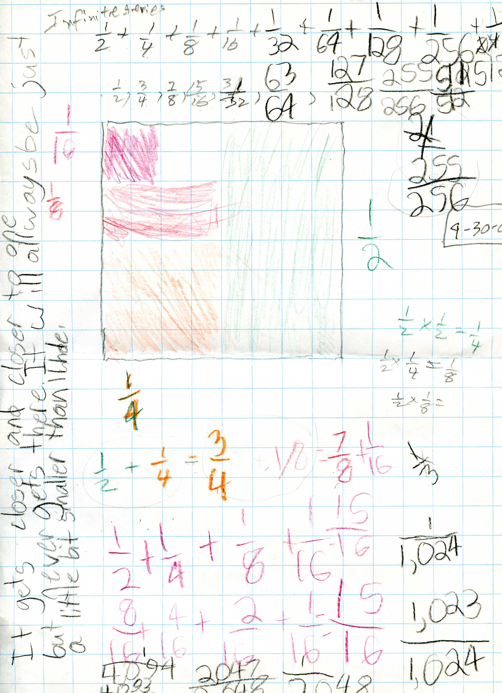
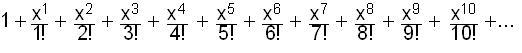

Discoveries about INFINITE SERIES
By Katy, 10th grader
BACKGROUND
 Mr.
Cohen had previously shown me an interesting property of infinite series. He
started by having me find the sum of the infinite series ½ + ¼ + 1/8 + 1/16 +
1/32 … He suggested that I use a picture and color in a half, and then add a
fourth and then add an eighth, a sixteenth, etc. until I found what the infinite
series approached.
Mr.
Cohen had previously shown me an interesting property of infinite series. He
started by having me find the sum of the infinite series ½ + ¼ + 1/8 + 1/16 +
1/32 … He suggested that I use a picture and color in a half, and then add a
fourth and then add an eighth, a sixteenth, etc. until I found what the infinite
series approached.
The picture showed that the
infinite series approaches 1.
Mr. Cohen next gave me the problem
1/3 + 1/9 + 1/27… This problem is a little trickier to show using diagrams, it’s
easier to use decimals (in Excel) to explain this problem:
|
1/3 |
.3333333333333 |
|
1/3 + 1/9 |
.4444444444444 |
|
1/3 + 1/9 + 1/27 |
.4814814814814 |
|
1/3 + 1/9 + 1/27 + 1/81 |
.493872 |
|
1/3 + 1/9 + 1/27 + 1/81 + 1/243 |
.497972 |
As you can see, this chart shows
that the infinite series approaches .5 or ½ . No matter how many terms you add,
the series will not reach .5. It would only reach point five if you could keep
adding into infinity.
The next problem was ¼ + 1/16 +
1/64 + 1/256…
|
(¼)
|
0.25000000000 |
|
(1/4)
+ (1/16) |
0.312500000000 |
|
(1/4)
+ (1/16) + (1/64) |
0.328125000000 |
|
(1/4)
+ (1/16) + (1/64) + (1/256) |
0.332031250000 |
|
(1/4)
+ (1/16) + (1/64) + (1/256) + (1/1024) |
0.333007812500 |
|
(1/4)
+ (1/16) + (1/64) + (1/256) + (1/1024) + (1/4096) |
0.333251953 |
As you can see, each time another
term is added, the infinite series gets closer to .333… or one third.
Mr. Cohen then asked me to figure a pattern for 1/n + 1/n^2
+ 1/n^3 + 1/n^4…..
½ + ¼ + 1/8 + 1/16 + 1/32 … approached 1/1
1/3 + 1/9 + 1/27… approached
1/2
¼ + 1/16 + 1/64 + 1/256… approached 1/3
The rule seemed to be that 1/n + 1/n^2 + 1/n^3 +
1/n^4….. will approach the limit 1/(n-1).
In Mr. Cohen’s book Calculus by
and for Young People --Worksheets one of the problems caught my interest.
It involved sharing 2 cookies between 3 people using “special
scissors” -- scissors that could only cut the cookies into two equal pieces. If
the special scissors were used once on each cookie, then there would be 4 pieces
and each person would get one piece, or ½ a cookie. The remaining half-cookie
would be cut with the scissors into two pieces that would each be one fourth.
Since three people cannot evenly share two pieces they would not receive any of
the newly cut pieces. Another way to put it would be that each has person
received ½ + 0/4 so far. The two left over pieces (which were each one fourth)
would be cut again, so there would be four pieces that were each a eighth of the
whole. Each person would get one of the new pieces, so they would have ½ + 0/4
+ 1/8. The remaining eighth would be cut again. The two new pieces would each be
a sixteenth of the whole. Since two pieces cannot be divided between three
people, each person would not receive either of the new pieces. That means that
each person receives ½ + 0/4 + 1/8 + 0/16. This pattern would continue, with the
cookie being cut forever and each person receiving ½ + 0/4 + 1/8 + 0/16…
MY DISCOVERIES
Another way to write ½ + 0/4 +
1/8 + 0/16 + 1/32…
is ½ +
1/8 + 1/32…
OR it can be written as
1/2 + 1/(2^3) + (1/2^5) … I wondered if there
was a rule that said what 1/n + 1/(n^3) + 1/(n^5)… , the sum of the odd
powers, approached.
I already knew that ½ + 1/(2^3) +
(1/2^5) … approached 2/3, so I next I tried to see what
1/3 + 1/(3^3) + 1/(3^5)… would approach.
|
1/3
|
0.3333333333 |
|
(1/3)
+ (1/27) |
0.3703703704 |
|
(1/3)
+ (1/27) + (1/243) |
0.3744855967 |
|
(1/3)
+ (1/27) + (1/243) + (1/2187) |
0.3749428441 |
|
(1/3)
+ (1/27) + (1/243) + (1/2187) + (1/19683) |
0.3749936493 |
As the table shows
1/3 + 1/(3^3) + 1/(3^5)… approaches .375 or
3/8
Next I tried to see what
1/4 + 1/(4^3) + 1/(4^5)…
would approach
|
1/4 |
0.250000000 |
|
(1/4)
+ (1/64) |
0.265625000 |
|
(1/4)
+ (1/64) + (1/1024) |
0.266601563 |
|
(1/4)
+ (1/64) + (1/1024) + (1/16384) |
0.266662598 |
|
(1/4)
+ (1/64) + (1/1024) + (1/16384) + (1/262144) |
0.266666412 |
It approaches .26666666666666666666... or 4/15
So far, I’d learned:
½ + 1/(2^3) + (1/2^5) … approaches 2/3
1/3 + 1/(3^3) + 1/(3^5)… approaches 3/8
1/4 + 1/(4^3) + 1/(4^5)… approaches 4/15
This suggested the series 1/n + 1/(n^3) + 1/(n^5)…
approaches the limit n/(n^2 – 1)

Since I’d found that
1/n + 1/n^2 + 1/n^3 + 1/n^4….. approaches 1/(n-1) and
1/n + 1/(n^3) + 1/(9^5)…approaches n/(n^2 – 1)
I wanted to find a rule for the limit of 1/n + 1/(n^4) + 1/(n^7) +
1/(n^10)+...
I guessed that it would be n/(n^3 –1)
I tested my rule on the series ½ + 1/16 + 1/128 …
|
1/2 |
0.5000000 |
|
1/2
+1/16 |
0.5625000 |
|
1/2
+1/16 + 1/128 |
0.5703125 |
|
1/2
+1/16 + 1/128 + 1/1024 |
0.5712891 |
|
1/2
+1/16 + 1/128 + 1/1024 +1/8192 |
0.5714111 |
|
1/2
+1/16 + 1/128 + 1/1024 +1/8192 + 1/65536 |
0.5714264 |
I thought it would approach 2/(2^3 – 1) or 2/7, but 2/7 is
.2857142. I used the computer to find out what fraction the infinite series was
approaching, and it gave me 4/7, or .5714285
My new guess for the rule for 1/n + 1/(n^4) + 1/(n^7) +
1/(n^10) +... was (n^2)/(n^3 – 1). I tested this idea on 1/3 + 1/81 + 1/21897…
I thought that it would approach (3^2)/(3^3 – 1) or
9/(27-1) or 9/26 or .3461538
When I added the first six terms of the series
|
1/3 |
0.33333333 |
|
1/3
+1/81 |
0.34567901 |
|
1/3
+1/81 + 1/2187 |
0.34613626 |
|
1/3
+1/81 + 1/2187 + 1/59049 |
0.34615319 |
|
1/3
+1/81 + 1/2187+ 1/59049 +1/1594323 |
0.34615382 |
|
1/3
+1/81 + 1/2187 + 1/59049 +1/1594323 + 1/43046721 |
0.34615385 |
I found that my guess was correct.
I took a look at the three rules I’d learned so far:
1/n + 1/n^2 +
1/n^3 + 1/n^4….. approaches 1/n-1
1/n + 1/(n^3) +
1/(n^5)…approaches n/(n^2 – 1)
1/n + 1/(n^4) +
1/(n^7) + 1/(n^10)… approaches (n^2)/(n^3 – 1)
I noticed a very definite pattern. In the first series the
numbers in the denominator did not skip any power as they went up (n^1, n^2,
n^3….) and the rule was (n^0)/(n^1 – 1).
In the second series the numbers in the denominator skipped
one power each time (n^1, skip n^2, n^3, skip n^4, n^5, skip
n^6…) and the rule was (n^1)/(n^2 – 1)
In the third series the numbers in the denominator skipped
two powers each time (n^1, skip n^2 and n^3, n^4, skip n^5 and n^6,
n^7…) and the rule is (n^2)/(n^3 –1)
This
shows that a general rule is that if you have an infinite series with 1 in the
numerator, and y is the number of powers skipped in the denominator; then the
rule for the limit of that series will be (n^y)/(n^(y+1) - 1)"
Fine work
Katy!
Links to
other infinite series in Don's works and
student
discoveries
Anna L., a 4th grader, does some fine Mathematics
INFINITE SERIES (chapter 1
in Don's worksheet book)-Anna worked on the
infinite series for a few weeks:
She colored in pieces of an 8x8
square to show this infinite series:

On the left side above, she wrote about what
is happening "..It gets closer and closer to one..".
Don asked Anna to graph the partial sums
1/2, 3/4, 7/8, 15/16, ... vs. # of terms
added for the infinite series 1/2 + 1/4 + 1/8 + ... below:

She
saw that the graph of the partial sums 1/2, 3/4, 7/8, ... approaches 1, which she said about the
picture above that. To see what other exciting things Anna L. has done, click
here.
Jocelin, a 3rd grader,
finds patterns in the infinite series
Kaitlin
shares 3 cookies between 5 people, 3 ways (one was an infinite series from a trimal!)
ErinK
Don asked Erin to do 1/3 and 1/3
of 1/3, and 1/3 of 1/3 of 1/3 and so forth, but instead Erin did 1/3 + 1/3
of what was left, each time, which turned out very interesting.
Lizzy & Cheryl ,
7th graders, find the sum of 1/n + (1/n)2+
(1/n)3+ (1/n)4+
(1/n)5+ ... and A/B
+ (A/B)2 + (A/B)3
+ (A/B)4 +
(A/B)5 +... and use
Jeff's method for finding this last one also.
Geoffrey
generalizes Q/N + (Q/n)2
+ ... and writes a program
with his Dad in Mathematica
How
far does the ball travel if it is dropped from 6 feet and bounces back 2/5 of
the distance when it hits the ground each time? (problem comes from Chapter 1).
Change this infinite repeating decimal
0.343434...
to a fraction (by using an infinite series).
TaraT
invented a new infinite series
A program in Basic to do the cookie-sharing
using
Brad's method and get the bimal (the numerators only, the denominators
are powers of 2).
- 10 c=0
- 20 INPUT T
- 30 INPUT
B
- 40 PRINT INT(T/B);
- 50 n = T - B*INT(T/B)
- 60 n =
n*2
- 70 c = c + 1
- 80 IF c>10 THEN STOP
- 90 IF n>B
THEN GOTO 110
- 100 n<=B THEN GOTO 150
- 110 x =
1
- 120 PRINT x;
- 130 n = n - B
- 140 GOTO
60
- 150 x = 0
- 160 PRINT x;
- 170 GOTO 60
- 180
end
Ian
finds the sum of the this infinite series: 1 + a + a2 + a3
+ a4 + a5 + ... = 1/(1-a), then shows that
Infinity = -1 in Chapter 3
Leibnitz
series
(chapter 1): the sum of the reciprocals of the
triangular numbers.
The
harmonic series
what
do you get for the sum?
Don shows that the
limit of the infinite series 2/5 + (2/5)2 +
(2/5)3 + (2/5)4 + ... equals the area within a
triangle
Area
of triangle= limit of infinite series,
applet done by Lori and Don - you need to download free, geogebra
and Java
Binomial Expansion of (1-x)-1 = an
Infinite series
The binomial expansion of
(1 + 1/n)n :
1any
power = 1, and interchanging n5 and 5! and all terms like
that, we get

Then
take the limit of (1 + 1/n)n as n->infinity, we get

The
Infinite
series for ex
=

Infinite
series for eix
(put ix -> x above) =
 =
=
(remember
the powers of i0 = 1, i1
= i, i2 = -1,
i3 = -i,
i4 = 1, ...)
eix
=
=
separating
the real terms and imaginary terms and factoring out i,
we get
eix
= 
AND
the
infinite
series for cos x is
infinite
series for sin x is
 AND
AND
eix
= cos x + i*sin x
An
infinite series is used to find the area under a parabola, using Don's version
of how Achimedes would do it, in Chapter 13 (the infinite series is 1/4 + (1/4)2
+ (1/4)3
+ (1/4)4
+ (1/4)5
+... not surprising)
Cookie-sharing (Brad's
method-special scisssors) -chapter
2
Patterns in the area of squares
Convergent, divergent, limit of ('goes to')
As a name for a simple fraction (chapter 1)
As a name for an infinite repeating decimal (chapter 1)
Pi See Chapter 11
, e^x See Chapter 11,
sin(x) and cos(x) in Chapter 11.
Don's interpretation of Archimedes' method to find the area under a
parabolic segment (chapter 13). Katy finds the area
under a sine wave from 0 - Pi
To find the area under curves (chapter 13)
To find the area and perimeter of the snowflake curve (chapter
4 and Emily)
To find the area and perimeter of the Serpinski curve (chapter 4)
To write an infinite repeating decimal as an infinite series and a
fraction, like 0.373737... or 1.3027027027... (chapter 1).
KatieR's pattern in the partial sums of the
infinite series 1/2 + 1/4 + 1/8 + 1/16 ...
Tim finds a new way to write the nth term of an
infinite geometric series.